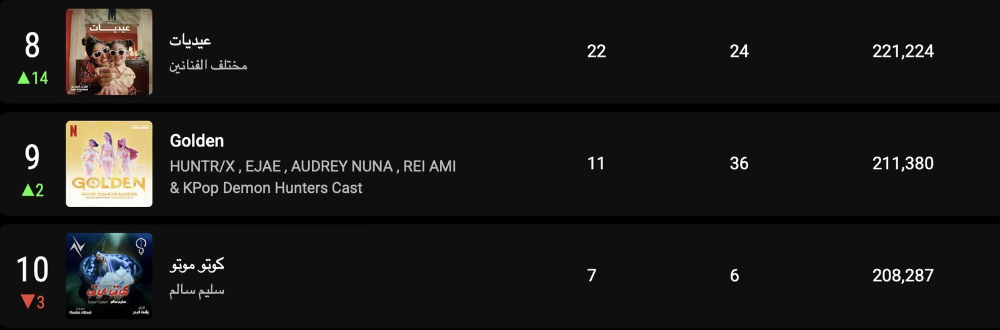
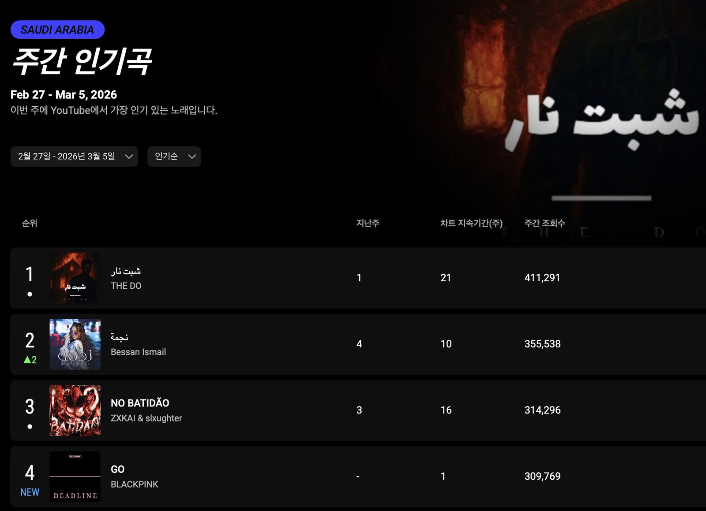
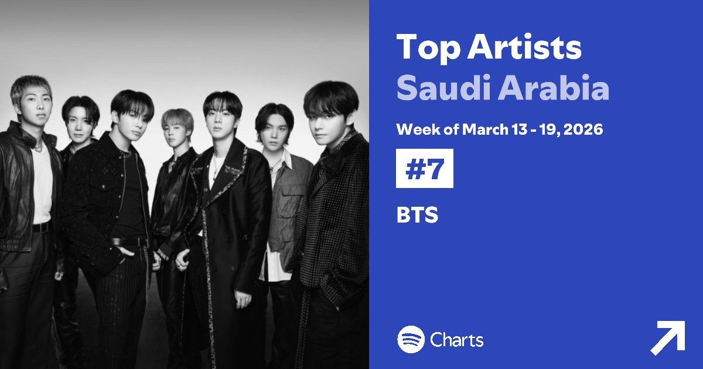
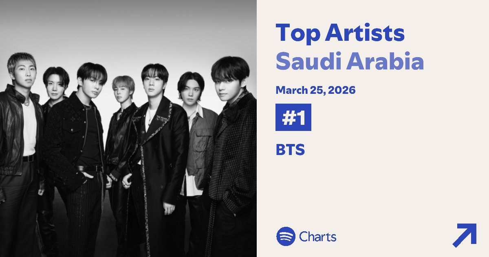
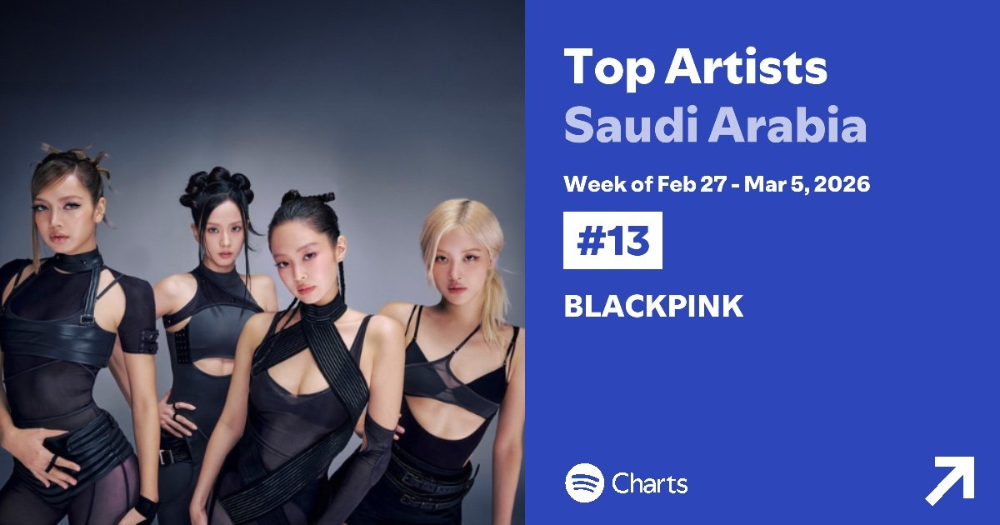
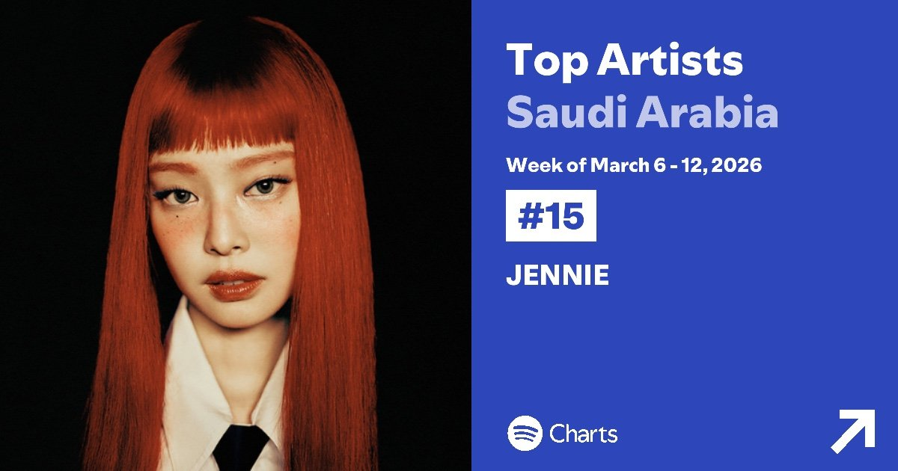

사우디아라비아에서는 케이팝(K-pop)이 영상과 음원 스트리밍 전반에서 고르게 소비되고 있다. 국제음반산업협회(IFPI)에 따르면, 사우디를 포함한 중동·북아프리카(MENA) 지역에서는 음악 소비의 97% 이상이 스트리밍을 통해 이루어지는 것으로 나타났다.
유튜브(YouTube) 차트, '골든(Golden)' 장기 흥행
이러한 흐름은 글로벌 플랫폼 차트에서도 확인된다. <케이팝 데몬 헌터스(K-pop Demon Hunters)>의 OST <골든(Golden)>은 2026년 3월 둘째 주 유튜브(YouTube) '주간 인기 뮤직비디오' 차트에서 9위에 올랐다. 해당 기간 주간 조회수는 16만944회로 집계되며 작품과 OST의 꾸준한 글로벌 인기를 다시 한번 입증했다.
이 곡은 2025년 8월 23일 발매된 이후 반년이 지난 시점에도 차트에 꾸준히 이름을 올리며 안정적인 소비 흐름을 이어가고 있다. 3월 첫째 주 12위로 차트에 진입한 뒤 셋째 주에는 15위로 소폭 하락했지만, 여전히 순위권을 유지하며 꾸준한 인기를 이어가는 모습이다. 또한 3월 둘째 주 유튜브 '인기곡' 부문에서도 <골든(Golden)>은 9위를 기록했다. 해당 기간 주간 조회수는 21만1,380회로 집계돼, 음원과 뮤직비디오 모두에서 고른 성과를 거두고 있음을 보여줬다.

▲ 사우디아라비아 유튜브 '주간 인기곡' 3월 둘째 주 9위 기록한 '골든(Golden)' — 출처: 유튜브(YouTube) 주간 인기곡 웹사이트
한편, 블랙핑크(BLACKPINK)의 '고(Go)'는 2월 24일 발매 직후 3월 첫째 주 30만9,769회의 조회수를 기록하며 4위로 차트에 진입했다. 이러한 흐름은 사우디아라비아에서 특정 신곡 중심이 아닌, 이미 발매된 케이팝 콘텐츠까지 장기 소비 흐름이 형성되고 있음을 보여준다.

▲ 사우디아라비아 유튜브 '주간 인기곡' 3월 첫째 주 4위 기록한 블랙핑크(BLACKPINK) '고(Go)' — 출처: 유튜브(YouTube) 주간 인기곡 웹사이트
스포티파이(Spotify) 차트, BTS(방탄소년단) 데일리 1위
글로벌 음원 스트리밍 플랫폼인 스포티파이(Spotify) 차트에서도 케이팝(K-pop) 아티스트의 존재감이 이어졌다. 3월 셋째 주 '탑 아티스트(Top Artists)' 차트에서는 BTS(방탄소년단)이 7위에 올랐으며, 3월 25일 기준 데일리 차트에서는 1위를 기록했다.


▲ 사우디아라비아 스포티파이 '탑 아티스트' — (좌) 3월 셋째 주 주간 차트 7위, (우) 3월 25일 데일리차트 1위 기록한 BTS(방탄소년단) — 출처: 스포티파이(Spotify) 웹사이트
BTS 외에도 블랙핑크의 <고(Go)>는 3월 첫째 주 <탑 송(Top Songs)>과 <탑 아티스트(Top Artists)> 두 차트 모두에서 블랙핑크가 13위를 기록했다. 이를 뒤이어 둘째 주에는 블랙핑크의 멤버 제니(Jennie)가 솔로 아티스트로 15위에 오르며 개인 활동 역시 차트 성과로 이어지고 있다. 이러한 흐름은 그룹뿐 아니라 개별 멤버 단위의 인지도와 소비가 동시에 형성되고 있는 흐름이다.


▲ 사우디아라비아 스포티파이 '탑 아티스트' — (좌) 3월 첫째 주 13위 블랙핑크(BLACKPINK), (우) 3월 둘째 주 15위 제니(Jennie) — 출처: 스포티파이(Spotify) 웹사이트
사진출처 및 참고자료
– 국제음반산업협회(IFPI) 웹사이트, 『글로벌 뮤직 리포트(GLOBAL MUSIC REPORT)』, ifpi.org
– 스포티파이(Spotify) 사우디아라비아 차트 웹사이트, charts.spotify.com
– 유튜브(YouTube) 사우디아라비아 차트 웹사이트, charts.youtube.com